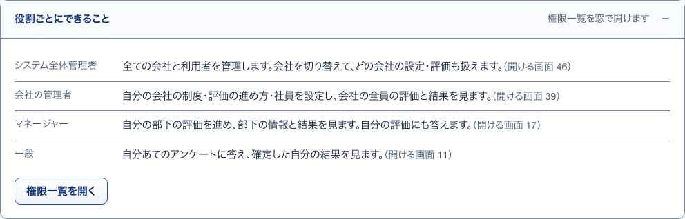
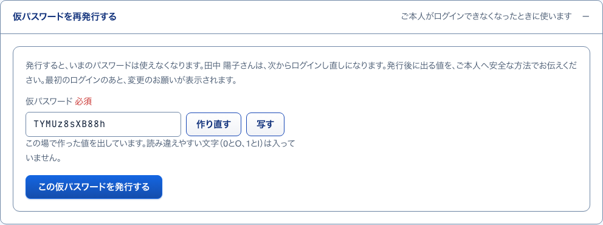
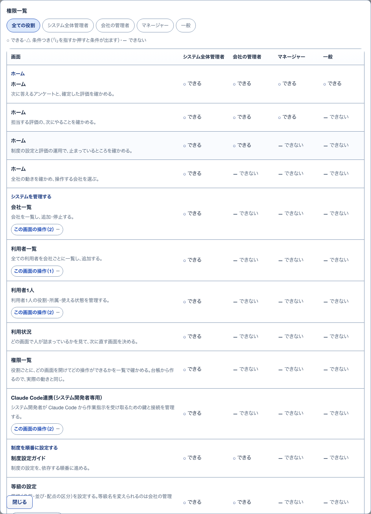
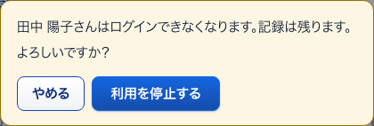
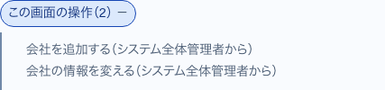

11役割ごとにできること開いて見る
S06 利用者一覧 ・ 押すもの: 「役割ごとにできること」

中に出るもの
- 役割ごとの一言（例: 一般「自分あてのアンケートに答え、確定した自分の結果を見ます。」）
- 役割ごとの開ける画面の数
- 権限一覧を開く
中で押せるもの
- 権限一覧を開く: 小窓「権限一覧」を開く
14仮パスワードの再発行開いて見る
S07 利用者1人 ・ 押すもの: 「仮パスワードを再発行する」

中に出るもの
- 発行すると、いまのパスワードは使えなくなる説明
- 仮パスワードの欄（その場で作った値）
中で押せるもの
- 作り直す: 別の値に作り直す
- 写す: 値を写す
- この仮パスワードを発行する: 仮パスワードを発行する
12権限一覧小窓
S06 利用者一覧 ・ 押すもの: 「権限一覧を開く」 ・ 閉じる: 閉じる

中に出るもの
- 役割のタブ
- 記号の説明（○ できる・△ 条件つき・— できない）
- 画面ごとの役割別の可否の表（S08 と同じ）
中で押せるもの
- 閉じる: 小窓を閉じる。Esc でも閉じる
16利用を停止する確かめる小窓
S07 利用者1人 ・ 押すもの: 「利用を停止する」 ・ 閉じる: やめる

中に出るもの
- （氏名）さんはログインできなくなる
- 記録は残る
- よろしいですか？
中で押せるもの
- やめる: 停止せずに小窓を閉じる
- 利用を停止する: 利用を止め、札が「利用停止」になる
13作ったあとの表示押したあとに出る
S06 利用者一覧 ・ 押すもの: 「この内容でアカウントを作る」 ・ 閉じる: 次の入力を始める ・ 押すと保存や送信が起きるので、写真は載せていない
中に出るもの
- アカウントを作った知らせ
- 仮パスワードの控え（注意書き・欄名・値）
中で押せるもの
- 仮パスワードの控えを見る: 今回発行した値を開く。「控えを隠す」で閉じる
- 写す: 値を写す
- 次の入力を始める: 欄を空にして次の1人を入れる
15発行のあとの表示押したあとに出る
S07 利用者1人 ・ 押すもの: 「この仮パスワードを発行する」 ・ 閉じる: 次の入力を始める ・ 押すと保存や送信が起きるので、写真は載せていない
中に出るもの
- 発行した知らせ
- 仮パスワードの控え（注意書き・欄名・値）
中で押せるもの
- 仮パスワードの控えを見る: 今回発行した値を開く。「控えを隠す」で閉じる
- 写す: 値を写す
- 次の入力を始める: 欄を元に戻す
17この画面の操作開いて見る
S08 権限一覧 ・ 押すもの: 「この画面の操作（2）」

中に出るもの
- 操作の名前
- できる最も狭い役割（例: 会社の管理者から）